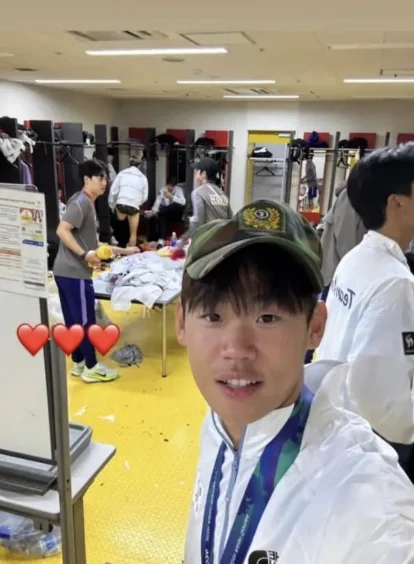

'세 살 버릇 여든 간다!' 전역모 세리머니 논란 박승수, 알고보니 '인성 문제'로 3년전 U-17 월드컵도 탈락했다 : 네이트 스포츠

양민혁은 금메달 획득 직후 인터뷰에서 "메달이나 트로피보다 병역 혜택 하나만 보고 뛰었다"고 말해 파장을 일으켰다.
주장 이기혁 역시 금메달을 들어 보이며 “저 군대 안 갑니다”라고 말해 논란을 키웠다.
박승수는 라커룸에서 전역모를 착용한 사진을 자신의 SNS에 올렸다가 논란이 커지자 삭제하고 사과했다.
박승수의 인성논란은 과거에도 있었다.
박승수는 2023 AFC U-17 아시안컵 당시 한국 U-17 대표팀에 이름을 올려 실제 경기에 출전했다.
하지만 같은 해 열린 FIFA U-17 월드컵에서는 최종 명단에 포함되지 않았다.
당시 감독을 맡았던 변성환 대표팀 코치는 최근 이천수의 유튜브 채널 ‘리춘수’에 출연해 박승수의 U-17 대표팀 선발과 관련해 언급했다.
변성환 감독은 당시 유소년 선수들에게 실력뿐만 아니라 태도와 인성이 중요하다고 강조했다.
축구를 잘하는 선수를 넘어 좋은 사람으로 성장해야 한다는 것이 변 감독의 지도 철학이었다.
변성환 감독은 박승수를 선발하지 않았던 배경을 설명하는 과정에서 "상대의 측면을 무너뜨리려면 꼭 필요한 선수였다. 하지만 선수들의 실력 뿐만 아니라 태도와 인성이 중요하다고 강조했다. 내가 박승수를 뽑으면 그 원칙을 스스로 어기는 것이었다. 코칭스태프와 회의를 통해 박승수를 뽑지 않기로 했다. 박승수에게 왜 탈락시켰는지 인성과 태도가 얼마나 중요한지 설명했다"고 전했다.
이렇게까지 대놓고 깰 정도야...?
일진 옆에 붙어있는 이진 상이긴 해 ㅋㅋㅋㅋ